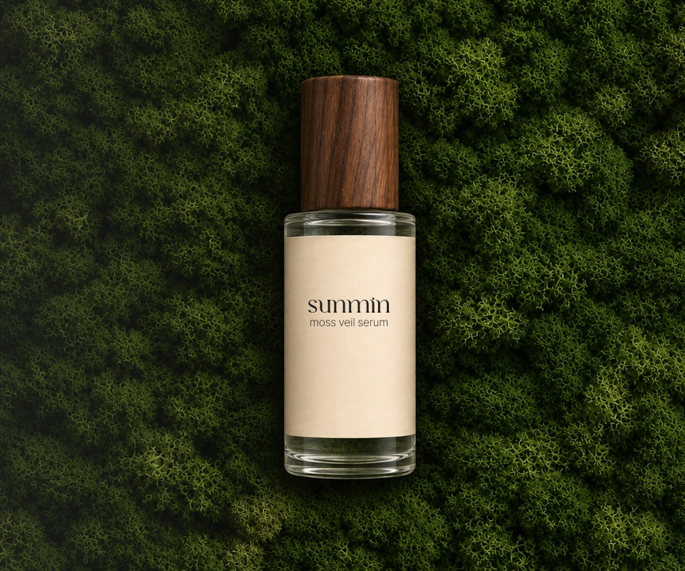
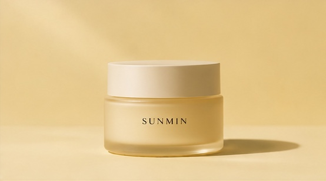
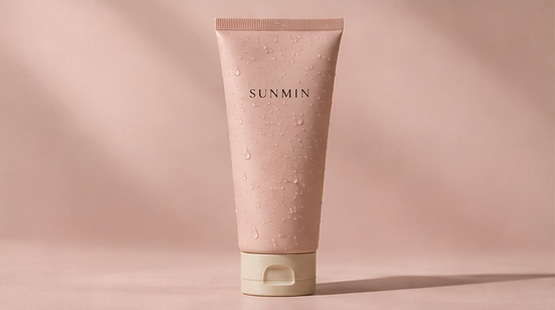
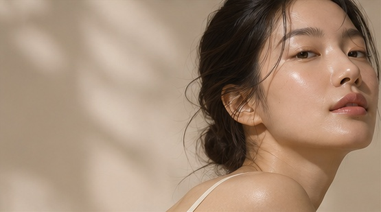
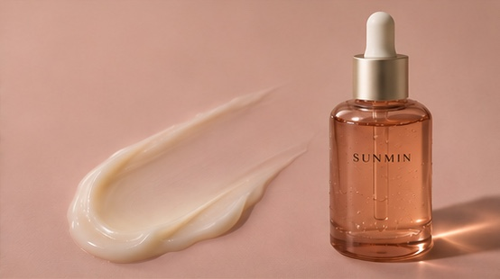

Daily Essentials
아침과 저녁, 매일 손이 가는 세 가지

모스 베일 세럼
고요한 숲에서 영감을 받은 세럼
50 mL
카렌듈라 소프트 크림
루틴의 마지막에 바르는 부드러운 크림
50 mL
소프트 클라우드 클렌저
아침과 저녁에 사용하는 크림 클렌저
120 mLRitual Sets
내 루틴에 맞는 제품 조합을 찾아보세요.
데일리 리추얼 듀오
그린 듀 세럼과 카렌듈라 소프트 크림으로 시작하는 아침
카렌듈라 크림 에디트
클렌저와 크림으로 간결하게 마무리하는 저녁
DESIGN PROCESS
제작 과정
메인 배너와 제품 섹션의 흐름을 잡고, 피그마에서 브랜드 홈페이지를 디자인했습니다. 데스크톱과 모바일 화면 크기에 맞춰 레이아웃이 자연스럽게 바뀌도록 반응형으로 퍼블리싱했습니다.
세럼 상세 페이지는 제품 이미지와 문구를 분리해 구성했습니다. 제품명과 설명은 HTML 텍스트로 작성하고, 화면 크기에 맞춰 글자 크기와 배치를 조정할 수 있도록 했습니다.
The Journal
일상에서 시작하는 스킨케어 이야기

아침 루틴을 가볍게 시작하는 법
세안한 뒤 세럼을 얇게 펴 바르고, 건조하게 느껴지는 부위에 크림을 덧발라 보세요. 외출 전에는 자외선 차단제로 마무리하세요.

세럼과 크림, 어떤 순서로 바를까?
묽은 제형의 세럼부터 바른 뒤 크림을 펴 발라보세요. 양과 단계는 피부 상태와 각 제품의 사용법에 맞춰 조절하세요.
저녁 세안에 들이는 짧은 시간
미지근한 물로 얼굴을 적시고 클렌저를 부드럽게 펴 바른 뒤 충분히 헹궈 주세요. 수건으로 얼굴을 가볍게 눌러 물기를 닦아내세요.